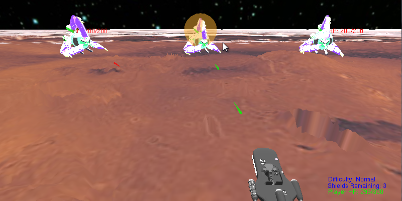

Features
Sound Effects and Background Music
There are various sound effects and background music in the game. There are sound effects for firing the laser and enemy unit explosions. The sound/music files are .wav format and are played using the PlaySound function, and as the PlaySound function only allows one audio to be playing at a time, I was not able to have background music and laser sounds at the same time.PlaySound function http://msdn.microsoft.com/en-us/library/dd743680(VS.85).aspx
Explosion sound effect from http://www.mediacollege.com/downloads/sound-effects/explosion/
Victory sound effect from http://www.allmusiclibrary.com/free_sound_effects.php
All other sound effects and music were from Star Wars Movies
Multiple Stages
There are 6 stages in total. All stages have 4 difficulty levels.Stage 1: 3 Tri-Fighters...

Stage 2: 1 YT1300 and 4 Jedi Fighters...
Stage 3: 3 Tie-Fighters...
Stage 4: 18 stronger Jedi Fighters...
Stage 5: 6 Tri-Fighters and 4 Tie-Fighters...
Final Stage: Death Star...
Explosion Effects
A sort of mock explosion effect is implemented. Whenever an enemy laser or friendly laser hits a target, there will be a small explosion in the color of the laser to indicate a hit.Green laser hits the target here...
Enemy unit is dead, so there's one big explosion...

Followed by serveral smaller explosions...

Landspeeder is hit by enemy laser, see the red explosion on the landspeeder...

The red explosion expanding, and the defeated enemy unit slowly descending into the terrain in the distance...